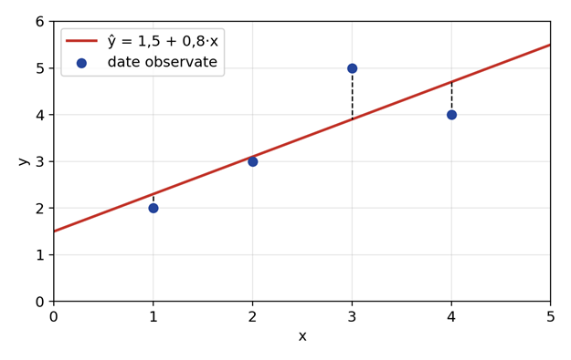

Exemplu rezolvat pas cu pas
Calculăm dreapta de regresie pentru datele din tabelul următor.
| x | 1 | 2 | 3 | 4 |
|---|---|---|---|---|
| y | 2 | 3 | 5 | 4 |
Pasul 1 – mediile: \( \bar{x} = \dfrac{1+2+3+4}{4} = 2{,}5 \) și \( \bar{y} = \dfrac{2+3+5+4}{4} = 3{,}5 \).
Pasul 2 – panta \( \beta_1 \):
Pasul 3 – termenul liber: \( \beta_0 = 3{,}5 - 0{,}8 \times 2{,}5 = 1{,}5 \).
Dreapta de regresie: \( \hat{y} = 1{,}5 + 0{,}8 \cdot x \). Verificăm calculând predicțiile și erorile:
| x | y | \( \hat{y} \) | \( e = y - \hat{y} \) | \( e^2 \) |
|---|---|---|---|---|
| 1 | 2 | 2,3 | −0,3 | 0,09 |
| 2 | 3 | 3,1 | −0,1 | 0,01 |
| 3 | 5 | 3,9 | 1,1 | 1,21 |
| 4 | 4 | 4,7 | −0,7 | 0,49 |
SSE = 1,8, deci MSE = 1,8 / 4 = 0,45. Suma pătratelor față de medie este 5, deci \( R^2 = 1 - \dfrac{1{,}8}{5} = 0{,}64 \): modelul explică 64% din variația lui y. Pentru x = 5 predicția este \( \hat{y} = 1{,}5 + 0{,}8 \cdot 5 = 5{,}5 \).
